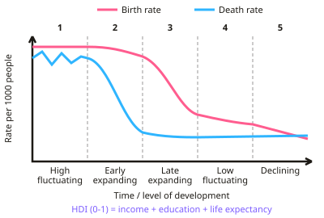

GCSE Geography · Topic 5
The changing economic world
The changing economic world is about why some countries are richer than others, and how the global economy is changing.
We will measure development, explain the development gap, and evaluate ways to reduce it.
Then we study globalisation and transnational corporations, a case study of Nigeria, and economic change in the U K.
- 8 subtopics
- 374 questions
- Free: 5.1 notes and 10 questions
In this topic
- 5.1Development and the development gapFree below · 64 questions
- 5.2Economic change in the UKOpen in Full Marks · 19 questions
- 5.3Reducing the development gap: aid, debt relief, fair trade, microfinance and intermediate technologyOpen in Full Marks · 86 questions
- 5.4Globalisation and transnational corporations: causes, impacts and a TNC case studyOpen in Full Marks · 31 questions
- 5.5NIC or LIC case study (Nigeria or India): location, trade, TNCs, aid and quality of lifeOpen in Full Marks · 32 questions
- 5.7Tourism in an LIC or NEE: Jamaica case studyOpen in Full Marks · 23 questions
- 5.6The UK in the 21st century: population, diversity and the UK's place in the worldOpen in Full Marks · 58 questions
- 5.8Population dynamics and structure: growth, the demographic transition, pyramids, density and over- or under-populationOpen in Full Marks · 61 questions
5.1 · Free notes
Development and the development gap

Key points
- Development means improvement in quality of life. Measures include GNI per head, birth and death rates, infant mortality, literacy, life expectancy and access to safe water.
- The Human Development Index (HDI) combines income, education and life expectancy into a single figure between 0 and 1.
- The demographic transition model shows how birth and death rates change as a country develops, through five stages.
- Causes of uneven development include physical factors (climate, landlocked, natural hazards), economic factors (trade, debt) and historical factors (colonialism, conflict).
- Strategies to reduce the development gap: aid, intermediate technology, fair trade, debt relief, microfinance loans, industrial development and tourism.
- Rostow's model (1960) says countries develop through five stages: traditional society, preconditions for take-off, take-off, drive to maturity and the age of high mass consumption. It is criticised for being based on Western countries' history.
- Frank's dependency theory argues that rich 'core' countries keep poorer 'periphery' countries underdeveloped, because LICs depend on exporting cheap raw materials and importing expensive manufactured goods.
In more detail
- The HDI: combines life expectancy, years of schooling and income per person into a score from 0 to 1 — about 0.97 for Switzerland and Norway, but under 0.4 for Niger and Somalia.
- Other indicators: birth rate, death rate, infant mortality, literacy rate, access to clean water and people per doctor.
- Demographic transition model: stage 2, death rates fall; stage 3, birth rates fall (e.g. India); stage 4, both are low (the UK); stage 5, births fall below deaths (Japan).
- Causes of uneven development: physical (being landlocked, like Chad, or hazard-prone), economic (relying on low-value raw materials) and historical (colonialism).
- Consequences: gaps in wealth and health, and international migration, such as people crossing the Mediterranean to Europe.
Practice
Development and the development gap: 10 questions
Pick an answer to check it, or open the answer for the explanation.
1. What does HDI measure?
- Only income
- Income, education and life expectancy combined
- Population size
- Birth rate only
Show answer
B: Income, education and life expectancy combined. It gives a broader picture of development than money alone.
2. What does the demographic transition model show?
- Migration routes
- Changing birth and death rates as countries develop
- Trade patterns
- Climate change
Show answer
B: Changing birth and death rates as countries develop. It has five stages from high fluctuating to low fluctuating.
3. Which is a physical cause of uneven development?
- Colonial history
- Being landlocked or prone to natural hazards
- Trade agreements
- Debt repayment
Show answer
B: Being landlocked or prone to natural hazards. Physical geography affects trade, farming and risk.
4. What is intermediate technology?
- The most advanced technology available
- Affordable, simple technology suited to local skills and needs
- Imported machinery only
- Technology used only in HICs
Show answer
B: Affordable, simple technology suited to local skills and needs. It is sustainable because local people can maintain it.
5. What is microfinance?
- Large government loans
- Small loans to individuals to start businesses
- Foreign aid to governments
- Debt cancellation
Show answer
B: Small loans to individuals to start businesses. It helps people become self-sufficient, though impact is debated.
6. Which is a social measure of development?
- GNI per head
- Literacy rate
- Trade balance
- Exchange rate
Show answer
B: Literacy rate. Social measures look beyond income alone.
7. Which is an economic cause of uneven development between countries?
- Being located on a tectonic plate boundary
- Having no coastline and being landlocked
- Having a tropical climate with frequent droughts
- Heavy debt repayments owed to foreign lenders
Show answer
D: Heavy debt repayments owed to foreign lenders. Debt repayments drain money that could fund health and education, so debt is an economic factor. The other options are physical factors (hazards, climate, landlocked).
8. A country has a birth rate of 40 and a death rate of 10 per 1,000 people. What is its natural increase per year?
- 5.0%
- 30%
- 3.0%
- 0.3%
Show answer
C: 3.0%. Natural increase = birth rate − death rate = 40 − 10 = 30 per 1,000. That is 30 ÷ 1,000 = 3.0% a year.
9. Which DTM stage has a high birth rate and a death rate that is falling rapidly?
- Stage 2
- Stage 1
- Stage 3
- Stage 4
Show answer
A: Stage 2. In Stage 2, better healthcare, food and clean water cut the death rate while the birth rate stays high, so the population grows rapidly. In Stage 1 both rates are high.
10. Infant mortality is 3 per 1,000 live births in a HIC and 60 per 1,000 in a LIC. How many times higher is the LIC figure?
- 57 times
- 180 times
- 2 times
- 20 times
Show answer
D: 20 times. 60 ÷ 3 = 20, so the LIC rate is 20 times higher. 57 is the difference, not the ratio.
Keep going in Full Marks
Full Marks has 64 questions on Development and the development gap (54 more than here), set out in practice levels. You also get notes and 3D models for all 8 subtopics of The changing economic world, plus games, timed exams and past papers.
On your exam board
- AQATopic 5: The changing economic world
- OCR ATopic 2: People of the UK, Topic 5: People of the planet
- OCR BTopic 6: Dynamic development, Topic 7: UK in the 21st century
- EdexcelTopic 5: Global development, Topic 8: Geographical investigations: UK challenges
- CambridgeTopic 1.1: Population dynamics, Topic 3.1: Development, Topic 3.3: Industry, Topic 3.4: Tourism